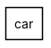
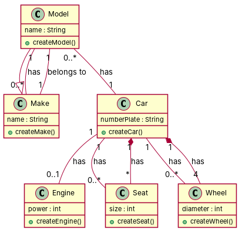

← all cases
D4/car — model qwen, condition B, run 1
1. Requirements (input)
R1: This system represents a car.
R2: Cars belong to models, which in turn belong to makes.
R3: Each car has four wheels, one engine and a set of seats.
R4: Every make and model have a unique name.
R5: Each wheel has a diameter, which must be the same for all wheels of the same car.
R6: Each engine has a certain power.
R7: Likewise, the seats have a size, which must be the same for all the seats of the cars of the same model.Each car has a number plate that identifies it.
2. Result 1 → Result 2 (ambiguity removal)
Red, struck-through: removed by ambiguity removal; green: added.
| classes (6 → 6) |
|---|
| Car |
| Engine |
| Make |
| Model |
| Seat |
| Wheel |
| attributes (6 → 6) |
|---|
| Car.number plate |
| Engine.power |
| Make.name |
| Model.name |
| Seat.size |
| Wheel.diameter |
| relations (6 → 6) |
|---|
| association: Car -> Model |
| association: Model -> Make |
| has: Car -> Engine |
| has: Car -> Seat |
| has: Car -> Wheel |
| has: Model -> Car |
3. Ambiguity tags
| id | req | type | cue | status | readings / explanation |
|---|
| A1 | R6 | incompleteness | certain | rejected |
The phrase 'Each engine has a certain power' is incomplete and does not provide enough information to clarify the meaning of 'certain'. |
| A2 | R7 | referential | it | resolved | Each car has a number plate that identifies it.; Each seat has a size that must be the same for all seats of the same model.
The term 'it' in the second sentence could refer to either the number plate or the size of the seats. |
4. Diagrams generated from the shared model
usecase diagram
class diagram
5. Code skeleton (Python; Java in code/java/)
"""Code skeleton generated from the shared model of D4/car.
Every class and method records the requirement(s) it traces to."""
from __future__ import annotations
import dataclasses as _dc
import enum as _enum
import typing as _t
@_dc.dataclass
class Car:
"""Source: R1"""
numberPlate: _t.Optional[str] = None
engine: _t.Optional["Engine"] = None
seats: _t.List["Seat"] = _dc.field(default_factory=list)
wheels: _t.List["Wheel"] = _dc.field(default_factory=list)
wheel: _t.Optional["Wheel"] = None
def createCar(self) -> None:
"""Operation."""
raise NotImplementedError
@_dc.dataclass
class Make:
"""Source: R2, R4"""
name: _t.Optional[str] = None
model: _t.Optional["Model"] = None
def createMake(self) -> None:
"""Operation."""
raise NotImplementedError
@_dc.dataclass
class Model(Make):
"""Source: R2, R4"""
name: _t.Optional[str] = None
make: _t.Optional["Make"] = None
car: _t.Optional["Car"] = None
def createModel(self) -> None:
"""Operation."""
raise NotImplementedError
@_dc.dataclass
class Engine:
"""Source: R6"""
power: _t.Optional[int] = None
def createEngine(self) -> None:
"""Operation."""
raise NotImplementedError
@_dc.dataclass
class Seat:
"""Source: R7"""
size: _t.Optional[int] = None
def createSeat(self) -> None:
"""Operation."""
raise NotImplementedError
@_dc.dataclass
class Wheel:
"""Source: R5"""
diameter: _t.Optional[int] = None
def createWheel(self) -> None:
"""Operation."""
raise NotImplementedError
6. Validation, checks and traceability
| python_compiles | True |
|---|
| java_compiles | True |
|---|
| attribute_mismatches | 0 |
|---|
| method_mismatches | 0 |
|---|
| use_cases | 0 |
|---|
| use_cases_without_actor | 0 |
|---|
| use_cases_without_method | 0 |
|---|
| actors_without_use_case | 0 |
|---|
| relations_to_unknown_class | 0 |
|---|
| inconsistencies | 0 |
|---|
| inconsistency_rate | 0.0 |
|---|
| requirement_coverage | 1.0 |
|---|
| validator fixes | |
|---|
| assumptions for open ambiguities | [] |
|---|
7. Scores against the reference
| element | P | R | F1 | TP/FP/FN |
|---|
| classes | 1.0 | 1.0 | 1.0 | 6/0/0 |
| attributes | 1.0 | 0.75 | 0.857 | 6/0/2 |
| relations | 0.429 | 1.0 | 0.6 | 3/4/0 |